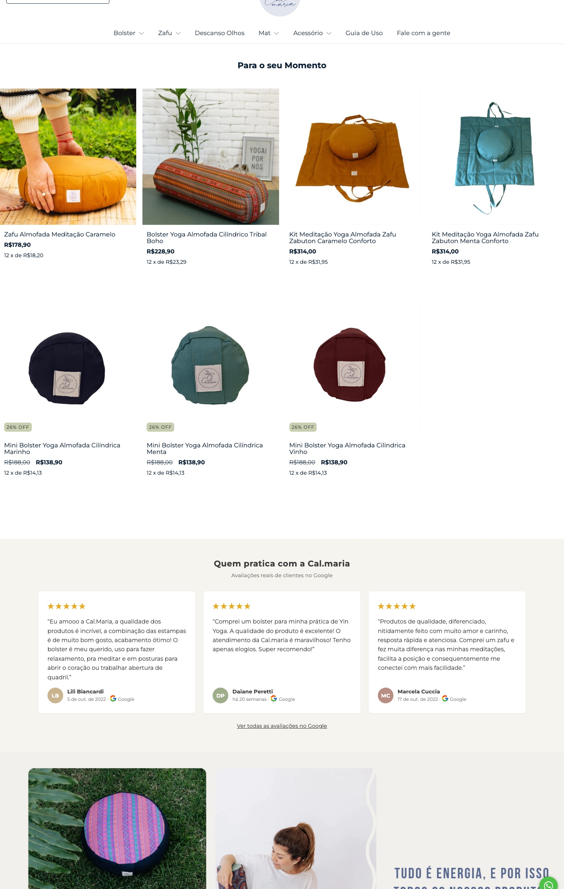
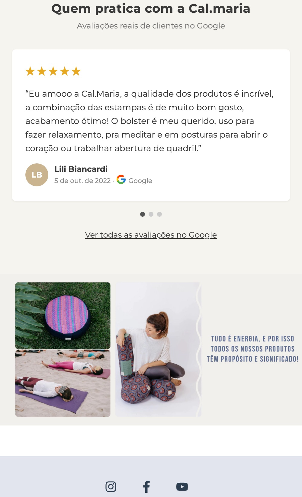

Depoimentos de clientes no site · proposta de 20/10/2026
Os depoimentos do Google na página inicial da loja
Separamos 7 avaliações 5 estrelas que a Cal.maria recebeu no Google. A ideia é mostrar essas avaliações na página inicial, logo depois dos produtos em destaque. Assim, quem chega na loja pela primeira vez lê a experiência de quem já pratica com as almofadas.
Como ficaria
Simulação feita em cima da página inicial atual, com a fonte e as cores da loja. O site ainda não foi alterado. No print, o carrossel e as categorias do topo estão ocultos só para a seção caber na imagem.

No computador: 3 depoimentos lado a lado

No celular: 1 depoimento por vez, deslizando
Onde mais usar
Página inicialO tema da loja já tem um bloco próprio de depoimentos, então não precisa de app nem de custo.
Página de cada produtoCada depoimento entra no produto que ele cita: bolster, zafu, zafu meia lua e almofada para os olhos.
Destaque "Avaliações" no InstagramOs prints em stories, fixados num destaque do perfil.
AnúnciosUma arte com 2 ou 3 avaliações para quem já visitou a loja.